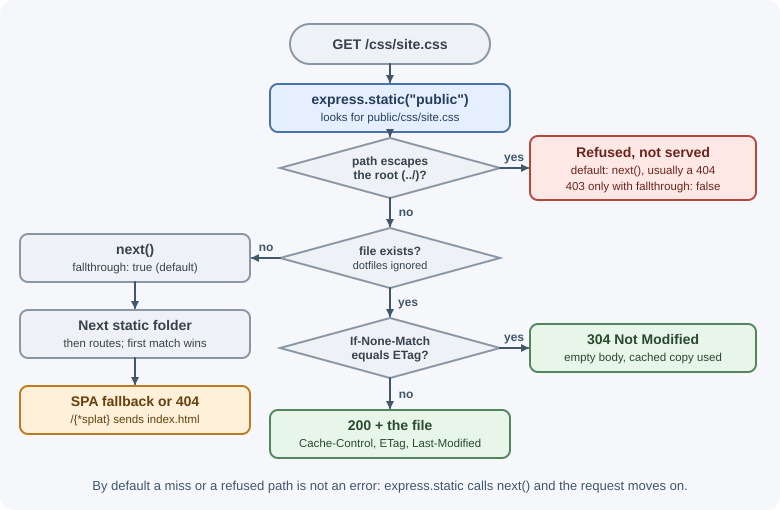
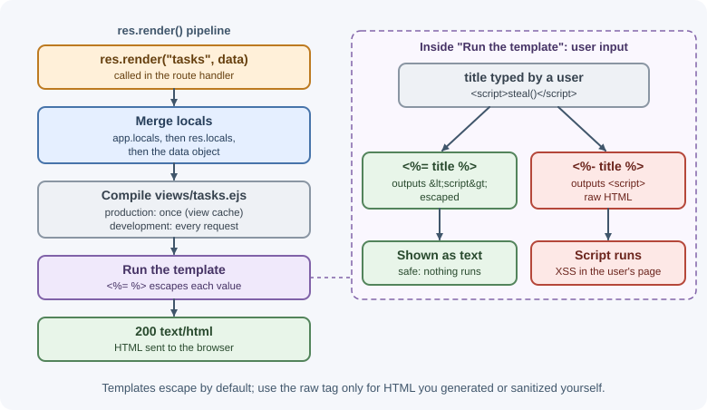

Static Files and Template Engines¶
Not every response is JSON. Websites also need to deliver static files
(images, stylesheets, scripts, fonts, a built single-page app) and sometimes
server-rendered HTML built from templates. Express handles the first with
the built-in express.static middleware and the second with template
engines such as EJS, Pug, and Handlebars.
Why it matters¶
Serving files looks trivial until it goes wrong: a misconfigured static
folder can expose .env files or source code, missing cache headers make
every page load slow, and unescaped template output becomes a cross-site
scripting (XSS) hole. Knowing what Express does here, and when to hand the
job to nginx or a CDN, keeps both performance and security under control.
Real-world usage¶
- PayPal moved web applications from Java to Node.js and described the stack in Node.js at PayPal: apps built on its kraken.js framework, which uses Express, rendered pages on the server with Dust templates. Server-side templates let the same JavaScript developers own both the page and the data orchestration.
- Ghost, the publishing platform, builds every site's front end from templates: its theme documentation states that Ghost themes use the Handlebars templating language, which keeps templates (the HTML) separate from JavaScript logic through helpers.
- Netflix rebuilt the netflix.com website on a Node.js architecture that renders on both the server and the client ("universal JavaScript"). In Making Netflix.com Faster the team reports a 70% reduction in startup time from this work, which shows why server rendering still matters for first-load performance.
Popular tools: express.static, template engines EJS, Pug, and Handlebars
(express-handlebars); build tools such as Vite that emit hashed asset
filenames; Nginx, object storage, and CDNs for serving files at scale.
How it works¶
express.static¶
express.static(root, options) returns middleware that maps the request
path to a file inside root. For app.use(express.static("public")), a
request for /css/site.css serves public/css/site.css. If no file
matches, it calls next() and the request continues to your routes.

It handles HEAD requests, Range requests (partial content for video),
ETag and Last-Modified validation (returning 304 Not Modified), and
refuses paths that try to escape the root with ../. With the default
fallthrough: true, a refused path or denied dotfile is not answered with
403 directly: the middleware calls next(), so the request continues to
your later routes and usually ends as a 404. Set fallthrough: false if you
want the 403 error passed to your error handler instead.
Options¶
| Option | Default | What it does |
|---|---|---|
maxAge |
0 |
Sets Cache-Control: max-age (milliseconds, or a string such as "1d") |
immutable |
false |
Adds the immutable directive: the browser will not revalidate during maxAge |
etag |
true |
Sends an ETag so browsers can revalidate cheaply |
lastModified |
true |
Sends Last-Modified based on the file's modification time |
index |
"index.html" |
File served for a directory request; false disables it |
dotfiles |
"ignore" |
How to treat names starting with .: "ignore", "allow", or "deny" |
fallthrough |
true |
On a client error (missing file, denied dotfile, bad path), call next(); if false, call next(err) so the error handler answers (404, 403) |
extensions |
false |
Try extensions, e.g. ["html"] serves /about from about.html |
redirect |
true |
Redirect /docs to /docs/ when it is a directory |
setHeaders |
none | Function to set extra headers per file |
Virtual path prefix¶
Mount the middleware on a path to give files a URL prefix that does not exist on disk:
app.use("/static", express.static("public"));
// GET /static/logo.png -> public/logo.png
Multiple folders and order¶
Middleware runs in registration order, so the first folder that contains a matching file wins:
app.use(express.static("public")); // checked first
app.use(express.static("uploads-cdn")); // checked only if public misses
Register static middleware early so file requests do not run through unrelated middleware such as authentication or body parsing, unless the files themselves need protection.
Caching strategy¶
| File type | Strategy |
|---|---|
Fingerprinted build assets (app.3f9a1c.js) |
Long maxAge (one year) plus immutable: the name changes when content changes |
index.html of a single-page app |
no-cache: always revalidate so users get new deployments |
| Images and fonts without fingerprints | Moderate maxAge (hours to days) with ETag revalidation |
no-cache does not mean "do not store"; it means "check with the server
before reuse". See caching.
Serving a single-page app¶
A React or Vue app built for production is a folder of static files plus
index.html. Client-side routes like /settings/profile do not exist as
files, so the server must return index.html for them and let the
JavaScript router take over. In Express 5, a catch-all route uses a named
wildcard:
"/*splat"matches any path below/(but not/itself)."/{*splat}"matches every path, including/.
Express 4 used "*", which Express 5 no longer accepts.
Never serve the project root¶
express.static(".") or express.static(__dirname) publishes everything:
package.json, source files, and possibly .env (if dotfile handling is
changed). Always point it at a dedicated folder like public/ or dist/.
Template engines¶
A template engine turns a template file plus data into HTML on the server.
views/profile.ejs + { user: { name: "Ada" } } --render--> <h1>Ada</h1>
Express integrates engines through two settings and one method:
app.set("views", dir): folder containing templates (default./views).app.set("view engine", "ejs"): default engine and file extension.res.render("profile", data): renderviews/profile.ejsand send it.
Data available to templates comes from three places, merged in this order:
app.locals (app-wide, such as the site name), res.locals (per request,
often set by middleware, such as the current user), and the object passed to
res.render().
In production (NODE_ENV=production), Express enables the view cache,
so templates are compiled once instead of on every request.
Popular engines and escaping¶
| Engine | Escaped output | Raw output (dangerous) | Style |
|---|---|---|---|
| EJS | <%= value %> |
<%- value %> |
HTML with embedded JavaScript |
| Pug | #{value} or p= value |
!{value} or p!= value |
Indentation-based, no closing tags |
| Handlebars | {{value}} |
{{{value}}} |
Logic-light HTML with helpers |
Escaping converts characters such as < and " into entities like
<, so user input displays as text instead of running as HTML. Use the
raw form only for HTML you generated and trust, or for user content that has
been sanitized with a dedicated library.

Server-rendered pages vs API-only¶
| Approach | How it works | Good for |
|---|---|---|
| Server-rendered (templates) | Express builds full HTML per request | Content sites, admin tools, emails, simple apps without a frontend build |
| API-only | Express returns JSON; a separate frontend renders | Single-page apps, mobile apps, multiple clients |
| Framework SSR | A frontend framework such as Next.js renders on the server | Rich UIs that also need fast first loads and SEO |
Many Express apps today are API-only, but templates remain useful for emails, PDFs, and small internal tools.
When to let nginx or a CDN serve files¶
Node can serve files, but a reverse proxy or CDN does it more efficiently:
- nginx serves files from disk with very little CPU and memory and handles many slow clients well.
- A CDN caches files close to users worldwide and removes the load from your servers entirely.
A common setup: the frontend build is deployed to a CDN or object storage, and Express serves only the API.
When to use and when not to use¶
Serve static files from Express when:
- The app is small or internal and one process serving everything keeps deployment simple.
- Files need application logic first (authentication, per-user access checks) and are not served often.
- You are in development, or packaging a single-binary or single-container app.
Hand static files to Nginx, object storage, or a CDN when:
- Traffic is high or global; each file request otherwise costs event-loop time in Node.
- Files are large (video, downloads) or you want edge caching near users.
Use server-side templates when you render emails, PDFs, admin tools, or content pages that need no client-side app. Prefer an API plus a frontend framework when the UI is highly interactive or several clients share the API.
| Option | Serves | Strength | Weakness |
|---|---|---|---|
express.static |
Files from the app server | Simple; can sit behind auth | Uses Node resources; no edge caching |
| Nginx / reverse proxy | Files from disk next to the app | Very efficient file serving | Another component to configure |
| Object storage + CDN | Files from edge locations | Global speed, offloads servers | Deploy pipeline and cache invalidation |
| Templates (EJS, Pug, Handlebars) | HTML built per request | No frontend build; good SEO | Less interactive; server does rendering work |
| SPA + JSON API | HTML shell + client rendering | Rich interactivity, many clients | Slower first load without SSR |
Practical examples¶
Static assets with sensible caching¶
import express from "express";
import path from "node:path";
const app = express();
const publicDir = path.join(import.meta.dirname, "public");
app.use("/assets", express.static(path.join(publicDir, "assets"), {
maxAge: "1y",
immutable: true, // safe because build files are fingerprinted
}));
app.use(express.static(publicDir, {
index: false,
dotfiles: "deny", // never serve /.env and similar (falls through to 404)
setHeaders: (res, filePath) => {
if (filePath.endsWith(".html")) res.set("Cache-Control", "no-cache");
},
}));
import.meta.dirname is available in ES modules on current Node versions;
in CommonJS use __dirname.
Single-page app with an API¶
const distDir = path.join(import.meta.dirname, "dist");
app.use("/api", apiRouter); // API routes first
// Unknown API paths get a JSON 404 instead of falling through to the HTML
app.use("/api", (req, res) => res.status(404).json({ error: "Not found" }));
app.use(express.static(distDir, { index: false }));
// Any other GET returns index.html so the client router can handle it.
app.get("/{*splat}", (req, res) => {
res.set("Cache-Control", "no-cache");
res.sendFile("index.html", { root: distDir });
});
Order matters: if the catch-all came before /api, every API call would
receive the HTML page.
Rendering an EJS template¶
import express from "express";
const app = express();
app.set("views", "views");
app.set("view engine", "ejs");
app.locals.siteName = "Task Tracker";
app.use((req, res, next) => {
res.locals.currentUser = req.session?.user ?? null; // available to views
next();
});
app.get("/tasks", async (req, res) => {
const tasks = await listTasks();
res.render("tasks", { tasks, title: "Your tasks" });
});
views/tasks.ejs:
<!doctype html>
<html lang="en">
<head><title><%= title %> | <%= siteName %></title></head>
<body>
<% if (currentUser) { %>
<p>Signed in as <%= currentUser.name %></p>
<% } %>
<ul>
<% tasks.forEach((task) => { %>
<li><%= task.title %></li> <!-- escaped: safe for user input -->
<% }) %>
</ul>
</body>
</html>
If a task title is <script>alert(1)</script>, <%= displays it as text.
With <%- it would run as a script.
Handlebars setup¶
import { engine } from "express-handlebars";
app.engine("handlebars", engine());
app.set("view engine", "handlebars");
app.set("views", "views");
app.get("/", (req, res) => res.render("home", { name: "Ada" }));
Best practices¶
- Serve static files from a dedicated folder, never the project root.
- Keep
dotfilesignored or denied. - Fingerprint build assets and cache them for a long time with
immutable; revalidate HTML on every load. - Register API routes before a single-page app catch-all.
- Use the escaped output syntax by default; treat raw output as a code-review red flag.
- Put shared view data in
res.localsthrough middleware rather than passing it to everyres.render()call. - Run with
NODE_ENV=productionso the view cache is on. - Move heavy static traffic to nginx, object storage, or a CDN.
In production¶
- Users get a blank page or "failed to fetch module" errors after a
deploy. Detect: frontend error monitoring shows chunk-loading errors and
404s for old hashed files right after a release. Cause: browsers still hold
an old
index.html(cached too long) that points to asset files the new deploy deleted. Fix: serveindex.htmlwithno-cache, and keep the previous release's hashed assets available for a while. - The frontend shows
Unexpected token '<'when parsing JSON. Detect: an API call returns200withContent-Type: text/html. Cause: a mistyped or missing API route falls through to the SPA catch-all, which answers withindex.html. Fix: register API routers first and add a JSON 404 handler for/apibefore the catch-all. - Secrets or source files are downloadable. Detect: access logs or a
security scan show
200responses for paths such as/.env,/.git/config, or/package.json. Cause: the static root points at the project folder, ordotfileswas set to"allow". Fix: serve only a build folder, keepdotfilesignored or denied, and rotate any exposed secret. - Latency rises with traffic although API handlers are fast. Detect: most requests in the access log are for images, scripts, and fonts, and event-loop delay grows during peaks. Cause: Node is serving all static traffic. Fix: move assets to a CDN or Nginx and set long cache lifetimes for fingerprinted files.
- A user's text runs as script in other users' browsers. Detect: an XSS
report, or a code search finding raw output (
<%-,!{},{{{ }}}) with user data. Cause: unescaped template output. Fix: use the escaped syntax, sanitize the rare HTML you must allow, and add a Content Security Policy.
Important terminology¶
- Static file: A file sent as-is, without per-request processing.
- Virtual path prefix: A URL prefix that does not correspond to a folder on disk.
- Fingerprinting: Adding a content hash to a filename so it changes when the content changes.
- Template engine: A library that renders templates and data into HTML.
- Locals: Data made available to templates (
app.locals,res.locals). - Escaping: Encoding special characters so data is shown as text, not interpreted as markup.
- View cache: Express's cache of compiled templates, on in production.
Common mistakes and misconceptions¶
- Serving
express.static("."). This exposes the whole project. - Putting the SPA catch-all before API routes. API requests get HTML.
- Using
"*"as a wildcard in Express 5. Use a named wildcard such as"/*splat"or"/{*splat}". - Long-caching
index.html. Users keep loading an old build after a deployment. - Using raw template output for user data. This creates XSS.
- Relative paths that depend on where the process starts. Build paths
from the module's directory with
path.join(). - Assuming Node must serve static files in production. A CDN or proxy is usually faster and cheaper.
Revision questions¶
- What happens when
express.staticcannot find a file for a request? - Why should fingerprinted assets and
index.htmlhave different cache headers? - How do you serve a single-page app's
index.htmlfor unknown routes in Express 5, and why does route order matter? - What is the difference between
<%= %>and<%- %>in EJS? - Where can data available to a template come from in Express?
- When would you serve static files from nginx or a CDN instead of Express?